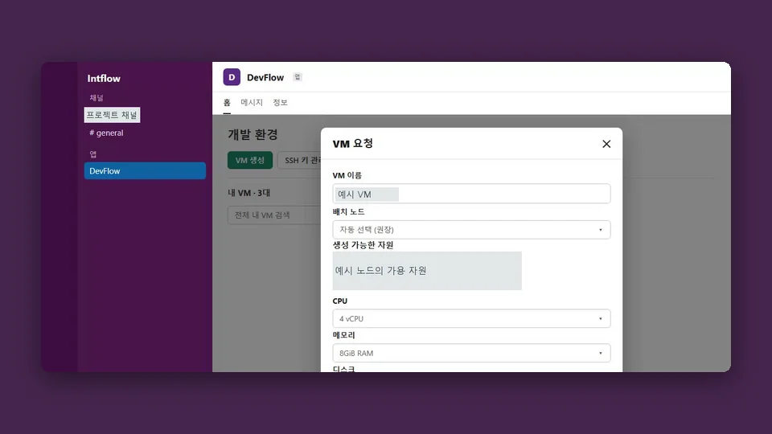
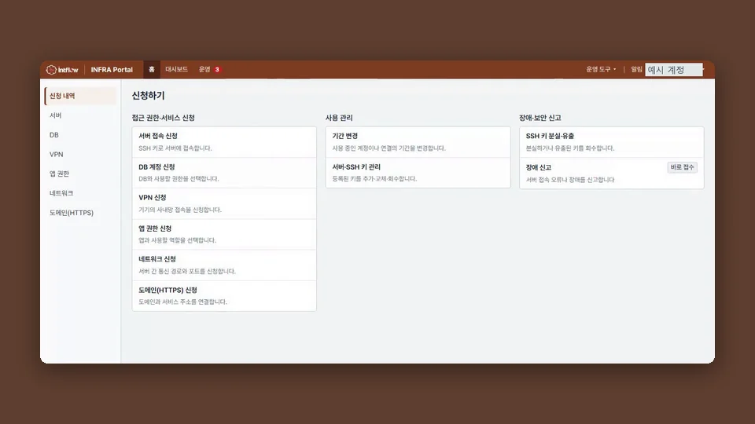
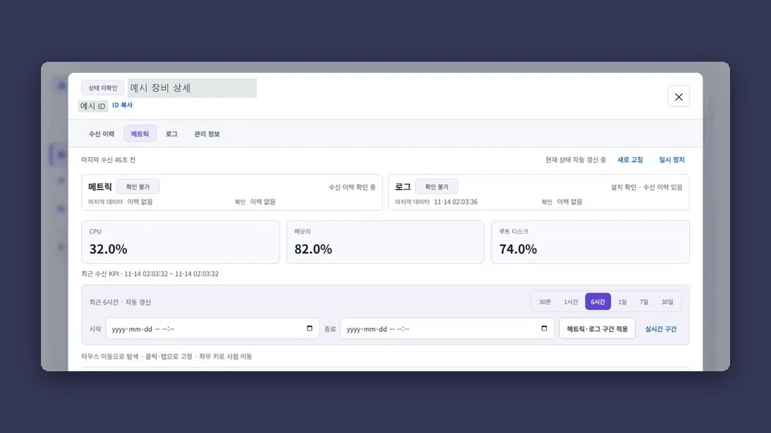
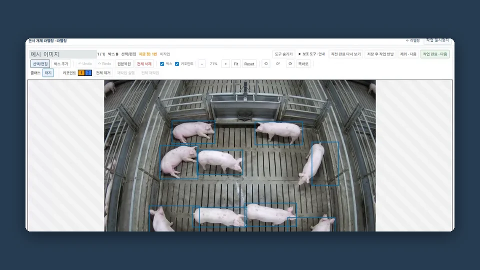
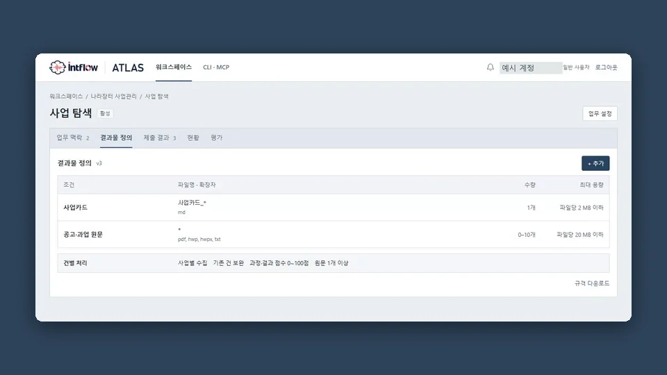
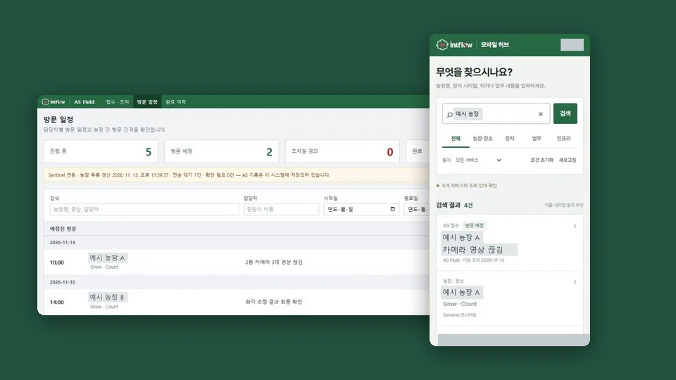

DevFlow
Slack에서 개발 VM 신청부터 회수까지

Slack에서 VM을 요청하면 접속 환경을 준비하고, 백업과 만료 자원 회수까지 자동화합니다. 자원 한도를 넘는 요청은 운영팀의 검토를 거칩니다.
VM 생성 후 상태 기록에 실패해도 만들어진 VM을 보존하고 작업 상태를 복구하도록 설계했습니다.
운영팀에 일일이 요청하던 일을 셀프서비스로 바꿨습니다.
개발 VM은 생성부터 회수까지 자동화했고, 접근 권한은 신청, 승인, 연장, 반납을 포털에서 처리할 수 있게 했습니다.
프로젝트 보기식별 정보를 가린 예시 화면과 AI 생성 장면을 사용했습니다.
DevFlow

Slack에서 VM을 요청하면 접속 환경을 준비하고, 백업과 만료 자원 회수까지 자동화합니다. 자원 한도를 넘는 요청은 운영팀의 검토를 거칩니다.
VM 생성 후 상태 기록에 실패해도 만들어진 VM을 보존하고 작업 상태를 복구하도록 설계했습니다.
Auth · INFRA Portal

Auth로 사내 서비스에 공통 로그인을 제공했습니다. INFRA Portal에서는 서버·데이터베이스·VPN 접근 권한을 신청하고, 승인·연장·반납까지 처리합니다.
소유자 확인을 강화할 때 신규 접근 키와 CLI 자격 증명부터 적용해 기존 키와 세션을 유지했습니다.
Sentinel

장비 메트릭과 로그, 이벤트를 한곳에서 조회합니다. 별도 알림 서비스는 MCP로 장애 기록과 배포 내역을 확인해 중복 알림을 줄이고 긴급 경보는 즉시 전달합니다.
기존 알림을 켜 둔 채 누락·지연·중복을 비교해 전환 여부를 판단할 수 있게 했습니다.
QC Studio

농장 영상과 데이터의 점검을 배정하고 발견한 이슈를 해결까지 추적합니다. 승인된 규격에 따라 이미지 라벨링을 배정·편집·검수하는 작업도 한곳에 모았습니다.
Intflow Atlas

사람이 업무 맥락과 제출 조건을 정하고, 에이전트가 MCP로 결과를 제출하는 사내 PoC입니다. 서버가 형식을 검사하고 담당자가 결과와 근거를 평가합니다.
AS Field

AS 접수, 원격 조치, 방문 일정과 현장 기록을 한 이력으로 관리합니다. 현장에서는 휴대폰으로 여러 서비스의 자료를 검색해 AS 기록에 연결합니다.